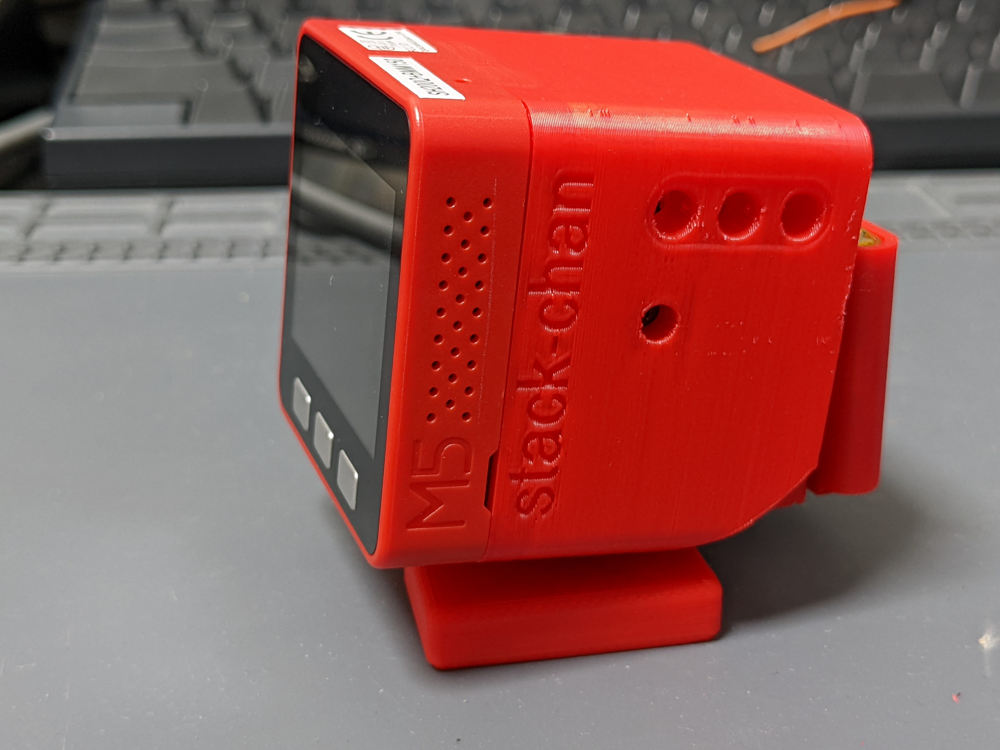

Stack-chan 国内自制指南
基于 Stack-chan 社区 v1.1.0 和 M5Stack K151 官方资料整理。Stack-chan 用 M5Stack 屏幕显示表情，两只舵机构成双轴机身；社区固件使用 Moddable JavaScript/TypeScript 和 MOD。

本版已修正接线、构建目标及舵机量程配置。自制路线完成了文档/源码核对和模拟协议测试，尚未完成实物整机验收。 网页与 Markdown 同步生成；随附 PDF 为历史版本，电气、固件及采购操作以本版 Markdown 为准，不照旧 PDF 接线。
1. 选择路线
| 路线 | 主机/舵机 | 判断与前提 | 入口 |
|---|---|---|---|
| A 官方整机 | K151 原装核心及机身 | 厂家完整产品；按厂家使用说明操作 | K151 整机 |
| B v1 + XL330 | CoreS3、XL330-M288-T×2 | 官方结构参考；需适配实际总线 GPIO 和自定义固件 | XL330 路线 |
| C v0 + SG90 | Core Basic/Gray 或 Core2、SG90×2 | 基础 DIY，先独立供电台架验证；显式选择 PWM | SG90 路线 |
| D SCS0009 | CoreS3 等、市售 SCS0009×2 | 合格半双工电路；需实测量程、raw 零位及限位 | 串行路线 |
| E K151 造型 | 普通 CoreS3、市售 SCS0009、官方 STL | 结构改造；不等价于 K151 专用电子方案，先试装支架 | 结构复刻 |
| F 网页体验 | 不需要硬件 | 模拟器可验证软件，不能验证供电/接线/机构 | 网页工具 |
先获得可用整机可选 A；学习 DIY 从 C 的小范围台架测试开始。B/D 在串行通信和标定通过后再合壳；E/G 等结构改造宜在基础机完成后进行。价格、现货、工具和 SMT 服务未实时核价，路线里的历史估算不作为采购承诺。
2. 接线与固件入口
B/C/D/E 的完整配置、构建、烧录和无按键验收见 DIY_FIRMWARE.md。 配套 firmware-configs/ 提供按主机/接线区分的 JSON、SCS0009 raw 标定驱动及一次性小角度 MOD。
- CoreS3 GPIO16 用于摄像头，外部 Port.C 是17/18；不能沿用旧 Core 的17/16。
- CoreS3 厂商 M5-Bus 图中26脚是GPIO14，不是GND。按实际图确认真正地线并测通断。
- 串行 DATA 必须有正确半双工释放/接收时序。不用 RX 串二极管或普通 USB-TTL TX/RX 短接。
- 自制 CoreS3 构建通用
m5stack_cores3；官方 K151 才使用m5stackchan_cores3。默认npm run flash/deploy是 K151，不读取自制机的manifest_local.json。 - 原版 scservo 固定按200°换算、没有传递
driver.serial。本指南为市售300°型号提供 raw 标定驱动；确认配置和替换模块一起安装。 - 不要求 CoreS3 有 A/B/C 实体键；验收 MOD 用公开 setPose API 一次测试左右5°、上下3°及回中。
先不装摇臂、确认零位再装壳；舵机独立合适5V供电并共地，独立 +5V 不和主机 +5V 直接并接。扩大动作范围前测出机械干涉位置。K151 的 Y轴5-85°只适用于它的机械参考，自制机按实际零位、方向和机构限位。
3. PCB、打印与电源
| 模式 | 跳线 | GPIO/配置 |
|---|---|---|
| m5-pantilt 串行 | R13/R14；R9-R12 不装 | 按实际主机映射；CoreS3 为17/18 |
| PWM，旧 Core | R9/R11；串行跳线不装 | pan5 / tilt2 |
| PWM，Core2 | R10/R12；串行跳线不装 | pan19 / tilt27 |
| PWM，CoreS3 | R10/R12；串行跳线不装 | pan7 / tilt6 |
完整 KiCad 工程及 制造文件已附。gerber/ 只有历史丝印/钻孔，不可作为完整制板输入；下单用 manufacture/jlcpcb/ 内完整 Gerber ZIP。BOM/CPL 仍需在装配预览核对封装、极性、元件方向、跳线及 LCSC 匹配，未完成 DRC/ERC 和实板签核，不能宣称上传就可免核对制造。旧 PDF 原理图与当前 KiCad 的元件版本差异以实际制造基准处理。
STL 按 stl/v1-xl330/、v0-sg90/、scs0009/、rs30x/、k151-body/、backpack/ 分类。先试装支架、舵机轴、轴承和主机卡位再整套打印。材料、支撑、强度和公差按实际打印条件选择，官方参考方向：

J5 是 BAT 电源路径，充电由具体主机管理，不是独立充电器。电池保护、极性、充电控制和升压路径需确认；不把 AAA/镍氢接到锂电充电端。容量不等于放电电流能力，初次采用桌面稳压电源并测压降。
4. 固件与进阶资料
离线 firmware/stack-chan-firmware-v1.1.0.zip 有四个目标的 bootloader、partition table 和应用。SHA-256 与随附校验文件一致、ZIP CRC 检查通过；未独立比对官方 release 下载件。此检查不证明预编译默认驱动和接线适合你的 DIY 机。
cd firmware
shasum -a 256 -c stack-chan-firmware-v1.1.0.zip.sha256
官方 K151 用网页工具选择 M5StackChan CoreS3 或专用离线目录；自制路线按 自定义流程 构建。恢复 K151 厂家出厂固件用 M5Burner。厂家 App 与社区 MOD 是两套生态，刷社区版会覆盖厂家版，普通 CoreS3 不能连接厂家 StackChan World App。
- 社区 API/MOD/TTS 文档存档及导读。
- Hermes 桥接方案：机器人、语音桥接和 Agent API 分层；先验证 Mock/语音链路再接硬件。
- 官方产品及出厂固件、板级支持包。
- ROBOTIS XL330 规格与通信电路。
- 国内采购可从 M5Stack 官方店、舵机厂家/授权代理、嘉立创及打印服务查询具体型号和实时价格。
5. 素材与许可
官方外壳、PCB、装配图、社区固件及文档来源为 stack-chan/stack-chan，许可 Apache-2.0。K151 结构来源为 M5_Hardware，按该仓库对应许可核对；产品资料来自 M5Stack，SCS0009 规格书来自飞特。转载图片、数据手册及商品硬件不因本仓库的 LICENSE 自动变为同一许可。
本指南新增的配置、标定驱动、验收 MOD 和文档脚本按 Apache-2.0 发布。未修改官方存档源码/结构件或固件二进制。后续升级需重新核对 SDK、驱动接口和构建配置。
6. 重建网页与验证配套驱动
使用 Node.js 20 或更新版本，在本仓库执行：
npm ci --ignore-scripts
npm test
npm run docs:build
网页从上述路线 Markdown 自动生成，避免接线说明在两份文档里分叉。测试使用模拟舵机协议，检查 raw 角度换算、机械限位、串口传递及错误处理，不代替设备构建和实机测试。PDF 不参与此生成流程。